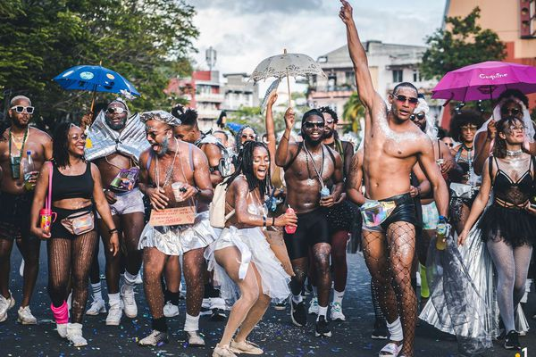
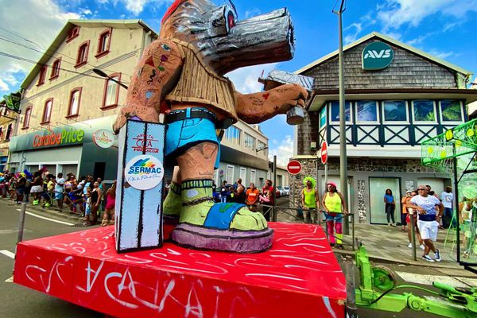
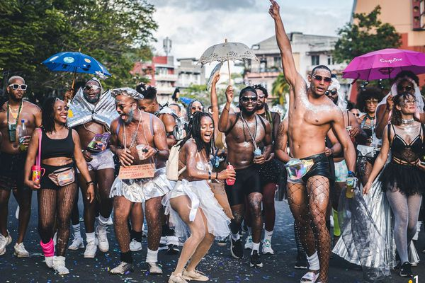
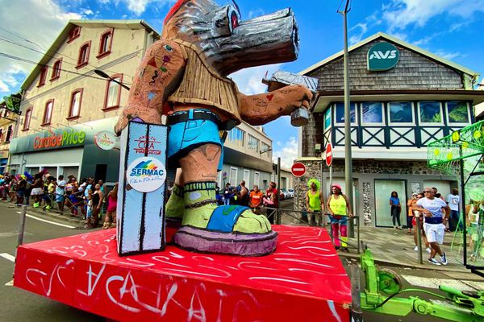
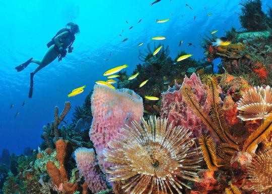
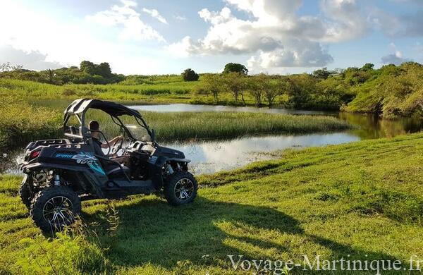
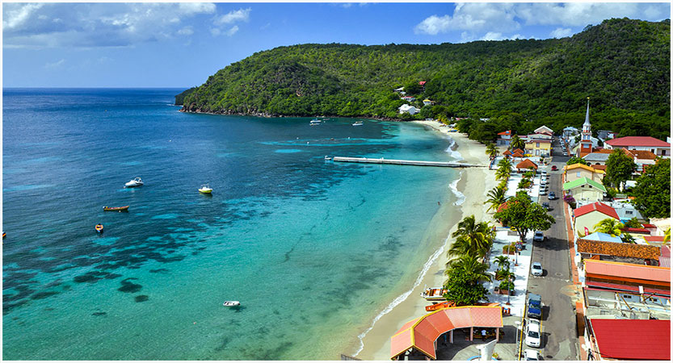
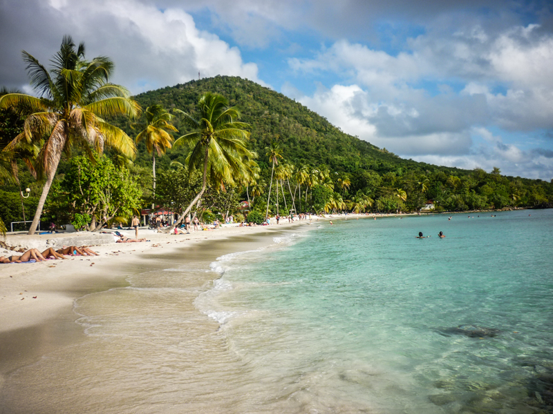
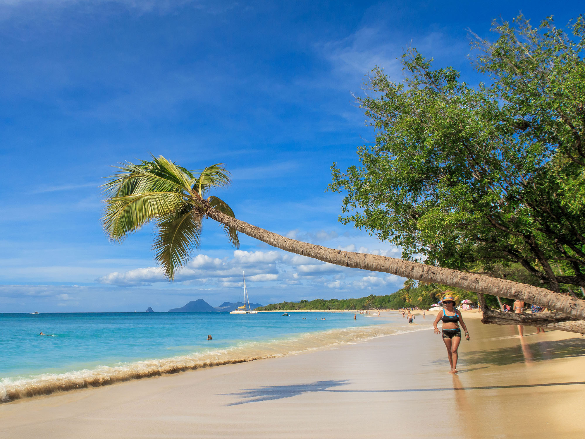
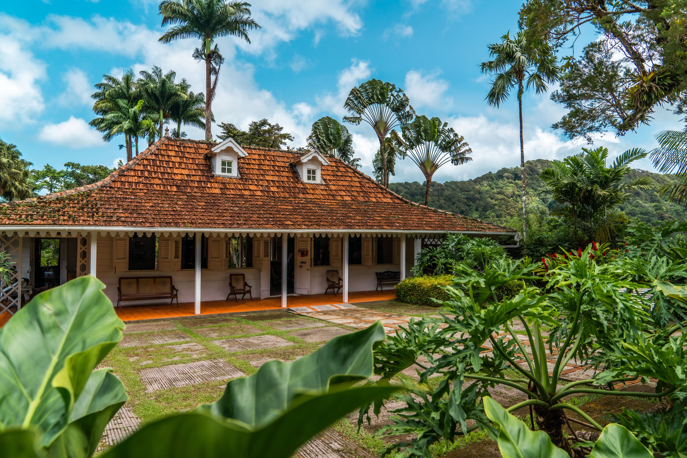

Il y a beaucoup de raisons de visiter la Martinique : ses innombrables richesses, sa gastronomie savoureuse et exotique, ses plages idylliques, ses sites naturels grandioses, l'incroyable diversité de sa flore, sa culture riche et métissée...
Sur cette page, nous vous présenterons quelques lieux et évènements qui sont intéressants, mêmes importants, à voir lors d'un voyage sur l'Île aux fleurs.
Le Tour des Yoles
Le tour des yoles rondes de la Martinique est une régate qui existe depuis plus d'une trentaine d'années et qui se déroule pendant une semaine sur un parcours de sept étapes.
Bateaux à voile initialement conçues pour la pêche, les Yoles sont désormais utilisées dans des régates sportives autour de l'ile.
Les Yoles sont dites Rondes car elles ne possèdent pas de quilles comme la plupart des bateaux à voiles. Les équipiers, les Yoleurs, se perchent donc sur des Bwa dressés afin de compenser la force du vent.
L'engouement populaire pour cet événement nautique est sans pareil sur l'île.
Chaque équipage possède ses supporters qui n'hésitent pas à venir nombreux soutenir leurs favoris, d'autres viennent admirer le majestueux ballet des bateaux aux voiles multicolores.
Le Tour de la Martinique des Yoles Rondes est l'occasion pour tous de faire la fête : des animations diverses existent dans les villes de départ et d'arrivée d'étapes et une partie de la population embarque à bord de bateaux suiveurs afin d'être au plus près de l'action.
Ci dessous un petit diaporama avec quelques images et vidéos du Tour des Yoles :
(Veuillez cliquer sur un nombre pour débuter le diaporama)

Le Carnaval de la Martinique
En Martinique, le Carnaval est une tradition et un très évènement synonymes de la fête et la bonne humeur... avec beaucoup d'imagination et un brin de folie !.
Contrairement au traditionnel calendrier catholique, il ne prend pas fin le Mardi gras mais le Mercredi des Cendres, tout comme en Guadeloupe et en Guyane. En revanche, il commence bien plus tôt que prévu : dès Noël passé, nous commençons à entendre par ci par là l'entrainement des parades d'orchestre de rue ! Officiellement, il dure 4 jours.
Cet événement est né pendant la colonisation, résultant de la rencontre des cultures africaines et européennes. Il a principalement lieu à Saint Pierre, ex capitale de la Martinique, jusqu'en 1902. En effet, suite à la tragique erruption volcanique de la Montagne Pelée, qui détruisit la ville, la tradition perdura et migra à Fort de France, nouvelle capitale.
Le Carnaval commence le samedi soir précédant le Mercredi des Cendres, dans les fêtes costumées qui animent la soirée. Mais c’est surtout le Dimanche que le carnaval se met en marche.
C’est le jour de l’apparition de la Reine du Carnaval, des premiers groupes à pied ou encore des orchestres de rue dont la musique, les costumes et la chorégraphie provoquent l’enchantement des spectateurs et des carnavaliers qui les suivent en dansant.
Le dimanche est aussi le jour où on voit apparaître les premières bradjaks, vieilles voitures, re-peintes en couleurs vives et surtout habillées de slogans orientés vers la critique de la société de consommation.
Il y a aussi la présentation de Vaval ou Bwabwa géant. Vaval représente généralement une situation plutôt négative ou mal vécue ayant marqué l'année, exposée de façon dérisoire. Par exemple en 2014 il s'agissait d'un moustique, faisant référence au pic épidémique du chikungunya.
Le Lundi Gras commence tôt le matin par le vidé en pyjama qui réunit les amateurs du vidé du matin et certains danseurs tardifs qui, à la sortie des zouks, vont poursuivre la fête dans les rues, aux sons des orchestres. Le costume approprié est le pyjama, mais certains hommes n’hésitent à enfiler une chemise de nuit dans l’esprit carnavalesque de l’inversion. Après le vidé, certains iront déguster le boudin créole précédé du décollage ( première goutte d’alcool absorbée le matin à jeun ).
Le Lundi Gras représente le mariage burlesque, ou pour résumer : le traversissement. Les femmes se déguisent en hommes et vice versa en tenue de mariage. L'imagination bat son plein, on fait les choses en grand, on s'en donne à coeur joie et c'est généralement très drôle !
Le Mardi Gras est le jour de sortie des diables rouges. Impressionnants avec leurs masques à miroirs et à cornes, symbolisant respectivement la connaissance et l’abondance.
Les carnavaliers portent ce masque avec des cornes de bovidé, un grand manteau rouge constellé de petits miroirs juxtaposés, ainsi qu'une queue de bœuf. Ils se précipitent dans la foule et effraient les enfants : une sorte de terreur s’empare de la foule quand il apparaît.
C'est LE jour de fête du carnaval.
Enfin, le mercredi des cendres est le jour du deuil. En effet, Vaval est brûlé en début de soirée. Le Dress code est donc le noir et blanc, la couleur du deuil étant le blanc dans la Caraïbe mais le noir en occident.
Le Roi Vaval a beaucoup d’enfants et de maîtresses, et les femmes de Vaval – souvent des hommes en tenue féminines – se transforment en pleureuses, des cris de douleur feinte retentissent dans les rues. À la fin de la journée, le corps de Vaval est brûlé et ses cendres dispersées.
Tous s’apprêtent alors à se rendre aux dernières soirées du Carnaval en tenue de deuil, pour danser et chanter les louanges de Vaval.
Ci dessous un petit diaporama avec quelques images du Carvanal de la Martinique 2023 :
(Veuillez cliquer 4 fois sur la flèche droite pour débuter le diaporama)

 



La Montagne-Pelée
Quand on vient en Martinique, on se doit de gravir la Montagne Pelée, point culminant de l’île aux Fleurs à 1397 mètres d’altitude.
C’est la Grande Dame du Nord, elle s’impose et domine le paysage en majesté, suscite la crainte mais par-dessus tout évoque le respect. Un lieu incontournable à visiter absolument lors de vos prochaines vacances en Martinique !
La Montagne Pelée est un site naturel à découvrir et redécouvrir. Avec plusieurs niveaux de randonnées, chacun peut l’explorer à son rythme.
Et pourquoi pas, s’accorder une pause, sous un abri de fraîcheur et apprécier le paysage ?
Un pique-nique en famille ou en duo sera le bienvenu dans ce cadre majestueux, mais attention à respecter et préserver cet environnement protégé !
Cette région est entrée dans l’Histoire de façon dramatique le matin du 8 mai 1902 lorsque l’éruption de la montagne Pelée, l’une des catastrophes naturelles les plus meurtrières du 20ième siècle, a tué les 30 000 habitants de la ville de Saint-Pierre en quelques minutes seulement.
Aujourd’hui, le musée Franck Perret à Saint-Pierre, la maison régionale du Volcan au Morne-Rouge ou le Centre de découverte des sciences de la terre, installé dans un bâtiment parasismique exceptionnel, vous démontrent les particularités des éruptions « péléennes ».


Les Distilleries
En Martinique, il y a de nombreuses Distilleries.
Nous vous mettons à dispositions une carte contenant toutes les distilleries de Martinique
Plongées sous-marines
En Martinique, il y a beaucoup de lieu adapté pour la plongées sous-marines.

Nous vous mettons à dispositions une carte contenant des clubs et centres de plongées de la Martinique
Buggy
En Martinique, le buggy est une activité très agréable à faire afin d'apprécier la vue et le paysage

Nous vous mettons à dispositions des liens sur d'autre sites qui développent un peu plus le sujet.
Les liens : https://www.voyage-martinique.fr/quad-martinique.html
https://www.martinique.org/les-plages-de-martinique
https://www.bellemartinique.com/activites-loisirs//buggy-quad-trial/rando-buggy-martinique/
Plages
En Martinique, Il y a une très grandes diversité de plages, chacunes ayant leurs caractéristique unique : sable fin blanc ou noir, végétation vierge ou à proximité des restaurants locaux, routes sinueuses bordées de nature sauvage...
Voici quelques photos de belles plages en Martinique:




Nous vous mettons à dispositions un lien menant sur le site de la Martinique et qui parle des plages de l'île.
Le lien : https://www.martinique.org/les-plages-de-martinique
Le Jardin de Balata
Le jardin de Balata est un jardin botanique privé situé à 10 kilomètres au nord du centre ville de Fort-de-France, route de Balata (vers Le Morne-Rouge), au bord de la route de la Trace, en Martinique.
Commencé en 1982 par son propriétaire, Jean-Philippe Thoze, grâce à sa collection de plantes personnelles, il a été ouvert au public le 19 avril 1986. Horticulteur passionné et créateur du jardin, Jean-Philippe Thoze a réuni une magnifique et exceptionnelle collection d’essences tropicales : des anthuriums, des hibiscus, des nymphéas exotiques, des roses de porcelaine, des héliconias, des pandanus panaché ou bien encore des dracénas et des balisiers.
Le jardin est ensuite acheté en 2008 par le Tropical Forest Park Group, propriété de Franck et Angélique Chaulet, qui comprend aussi le Zoo de Guadeloupe et le Zoo de Guyane. En 2014, ce groupe s'enrichit du Zoo de Martinique, crée sur l'Habitation Anse Latouche.
Voici quelques photos du Jardin de Balata :



Et voici le lien du site officiel du Jardin de Balata : https://www.jardindebalata.fr
Musées
Pour découvrir les trésors de la Martinique, les vestiges du passé et les richesses du présent, venez visiter les magnifiques musées de la Martinique.
Voici quelques photos de musée :


Et voici la carte intéractive sur les musées de la Martinique :
Danses traditionelles
Pour les amateurs de danses , vous serez émerveillés et par la diversité des danses locales. Si vous le souhaitez, vous pourrez être initiés à la pratique de ces danses qui trouvent la plupart leurs fondements depuis la période de l'esclavage.
Sur ces quelques extraits, vous aurez un aperçu de deux danses locales célèbres: le bèlè et la biguine.